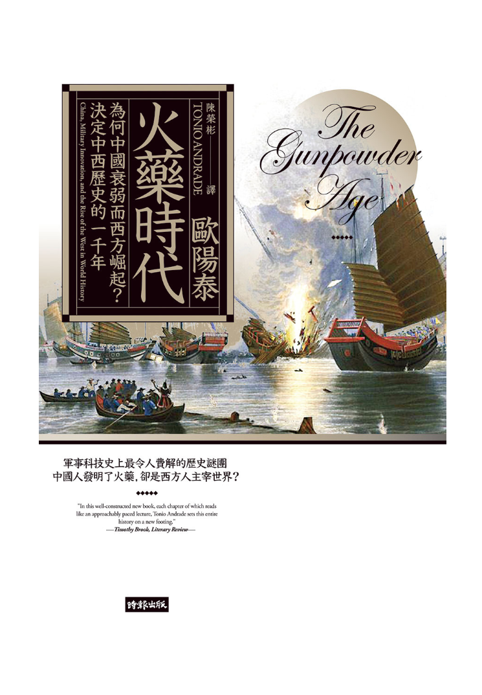

Kindle-火藥時代（歐陽泰）

我個人其實沒有看專門講述歷史的書籍的習慣，所以一般來說，我的電子郵件推薦的書多半都是小說類，或是理財有關的書籍。但是由於最近有接觸一些非主流歷史書籍，故我的信箱現在偶爾也會推播歷史書籍。歐陽泰就是其中之一，他是西方人卻精通中國的歷史，因為讀書群有人提示說外國人對於中國的歷史，會有截然不同的看法，也因此燃起我的興趣。於是我就選擇了火藥時代來閱讀。
一般來說，十九世紀末的中國都被認為是積弱不振，因為儒家思想的餘毒，導致科學和科技都遠遠落後西方。然而中國都是一直積弱不振的嗎？其實並不盡然。中國在明代的時候，不僅先發展出火藥技術，在火器上的使用也領先西方。儘管後來西方在火器技術上有趕上中國的腳步，但是中國又發展出火槍陣，又有不差的軍事訓練，所以中國儘管一直受到西方或外來勢力威脅，但是中國一直都可以與之相抗衡。
但是到了清末，尤其經過乾隆這一段較為太平的時段，沒有外來的競爭，就沒有發展軍事科技的動力，甚至連軍務都開始廢弛，就在這種情形下，就形成了清朝時期中國極弱不振的形象。但是那時的中國真的都沒有發展嗎？武器都不精良嗎？其實在甲午戰爭時，中國的船艦其實是優於日本海軍的，只是中國人不明白船堅炮利的背後，其實是有深厚的科學基礎，還有改變之後的制度來支撐。如果沒有科學基礎（例如不會畫工程圖），沒有良好的行政制度（效率低下的政府），再好的武器都無法發揮效果。
本書也有講到一些一般史學家未提到的觀念。例如為何中國不傾向發展大口徑的大砲，即便本身已經有可以發展大口徑大砲的能力?作者認為當時歐洲與中國城牆的設計是截然不同的，中國的城牆非常的厚實，即便像西洋大砲這種武器，也很難將城牆毀壞或打穿，如果你是中國的領導人或是中國的軍事人員，你會極力的發展大口徑的大砲嗎?另外，大口徑的大砲在火藥的裝填上，炮管的冷卻上，都大大的限制大口徑大砲的應用。反觀火槍或是弓箭，不僅在當時已經技術成熟，加上火槍或是弓箭的陣型，只要經過精良的訓練，就可以源源不絕的射出弓箭或子彈，對敵軍造成極大的殺傷力。大家必須要想像，以當時的技術，火槍和弓箭是沒有連發的，所以必須要分成三排，當第一排發射完成後，直接退到最後一排裝填彈藥或是弓箭，第二排就上前至第一排發射，第三排裝填完成就上前至第二排預備。這樣就可以組成綿密的火槍或弓箭的陣型。
所以這本書，我覺得某些觀念跟槍炮、鋼鐵與病菌這本書有異曲同工之妙。國家都必須要經歷不斷的威脅，才有機會發展軍事科技。因為只有發展或跟上鄰國的腳步，自己才不會處於劣勢，甚至滅亡。而且這本書也不會像傳統主流歷史一樣，講述千篇一律的陳腔濫調，是值得一看的歷史書。
延伸閱讀:
半藤一利-諾門罕之夏（Google圖書）另外，美國購物代運可參考:
https://a1253247.blogspot.com/p/hopshopgo-vs-spexeshop.html
對板球有興趣的可參考:
https://a1253247.blogspot.com/2022/05/cricket-line-written-by-admin-24-10.html
對生活飲食有興趣，可參考: